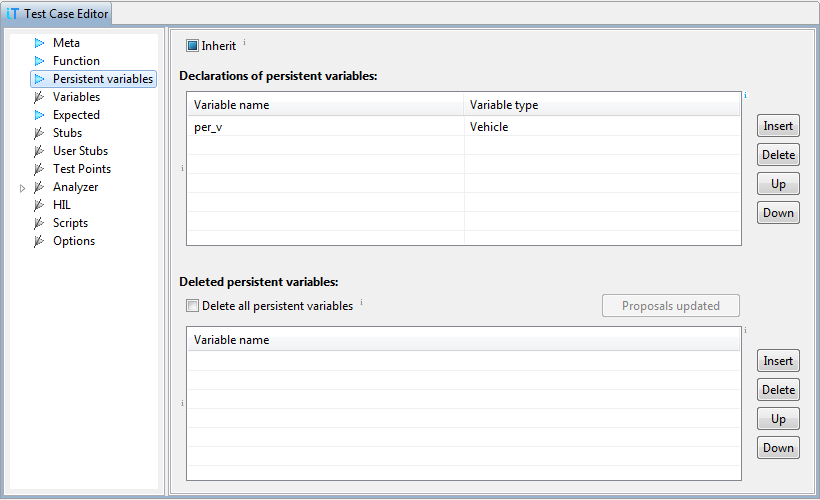

Persistent variables
This page contains declarations of persistent variables. As their
name implies, persistent variables have lifetime of several test
cases. They are created in the test case where they are declared,
and exist until they are deleted either explicitly or when all
persistent variables are deleted.
Examples for usage of persistent variables are objects or
structures, which contain intermediate results during several
function calls.

Persistent variables can be created in different memory regions,
for example on stack, or some free RAM. Configuration of memory
region can be done in winIDEA, menu Test | isystem.test
Options ... | Persistent variables location.
WARNING: When persistent variable are created on target stack,
the stack pointer is not restored after test, so running anything else than
unit test will most likely crash the target. Using persistent variables
on the stack with system tests is highly discouraged (you really have to know
what you are doing - there will be no return from current function).
Initialization of persistent variables can be done in testIDEA
section Variables.
Recommendation: Use persistent variable only when results of one
test case are needed in another test case. Otherwise prefer test local
variables (section Variables), because they are
automatically deleted after test cases execution, so no memory
leaks can occur.
Content proposals
When we are entering name of persistent variables to be deleted in
the bottom table, testIDEA tries to provide list of persistent
variables, which are available at this point. To get this list, it
has to parse many test cases. Since this may take up to several
seconds for test suites with more than 10000 test cases on slow machines,
testIDEA enables button Refresh content proposals in such
case. By pressing the button we can generate the list explicitly.
If it manages to get the list quickly, the button is
disabled and contains text Proposals updated.